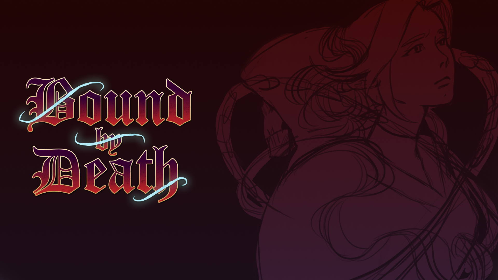

TEAM PROJECT · 2026
Bound by Death
Top-down cooperative hack-and-slash · C++ · DirectX 12 · HLSL

Official project artwork by the Bound by Death art team.
The Game
Bound by Death is a top-down, local multiplayer hack-and-slash game set in a dark-fantasy world. Two players fight and explore together while connected by the game's central Bound mechanic.
The game was developed by Ravenwhisp, a student studio formed during my master's degree in Programming for AAA Video Games. The entire program was structured around developing a single game as a team, using a custom engine built by the students.
The project is currently approaching completion, with its final presentation scheduled for November 6, 2026.
My Role
I was part of the engine programming team, working primarily on rendering features and visual effects.
My work included developing a custom Line Renderer and implementing a Trail Component, as well as collaborating with another programmer on physically based rendering and image-based lighting.
I also independently implemented normal mapping, material ambient occlusion and emissive material support, including the corresponding shader logic, texture bindings and material flags.